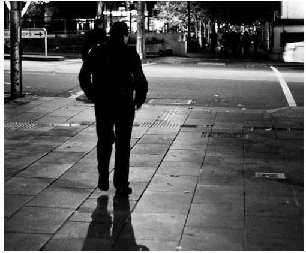
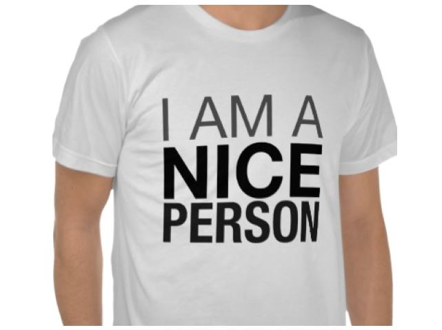
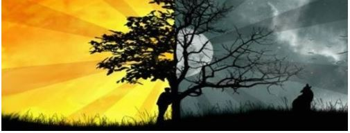

Textos interessantes sobre assuntos dos quais ninguém quer saber
Por Igor Buess
Carl Jung, psiquiatra e psicoterapeuta mundialmente conhecido, utilizava o termo Shadow ou "sombra" para descrever o conjunto de características indesejáveis que um indivíduo carrega consigo em sua psique. A desejabilidade de determinada característica depende, em maior ou menor grau, da sociedade em que a pessoa está inserida.
Via de regra, características indesejáveis são punidas diretamente através de leis ou indiretamente através do ostracismo social. Desta forma, o indivíduo, com intuito de se autopreservar, tenta ao máximo "enterrar" todas as características consideradas indesejáveis no fundo de sua mente para fingir que elas não existem. Para exemplificar o conceito de características indesejáveis, vou usar três bons exemplos na sociedade ocidental como referência (lembrando que existem muitas outras mais sutis):
1) comportamentos violentos (oprimir e agredir gratuitamente outros membros da sociedade);
2) desejos sexuais não aceitos (imaginar ou executar atos sexuais julgados como inaceitáveis ou asquerosos na opinião de outros membros da sociedade);
3) mentira, ludibriamento, traição (atos de quebra da confiança que outra pessoa depositou no indivíduo para obtenção de vantagem).
OBS.: Nem todas as pessoas possuem os traços citados. Estas características são extremamente variáveis de pessoa para pessoa. Faço questão de ressaltar isto pois, para alguns, apenas a menção da possibilidade de associação com estes traços já consiste numa enorme ofensa.
Quem nunca conheceu aquela pessoa que se diz pacífica, do bem, fiel e que sequer seria capaz de machucar uma mosca? ...e que tempos depois você descobre que ela cometeu um ato horrendo de violência que faria inveja em qualquer psicopata.
Muito provavelmente este indivíduo optou por evitar ou negar completamente traços violentos de sua sombra que já existiam na sua psique durante muito tempo. Assim, tornando-o uma verdadeira "bomba relógio" que em um determinado momento estourou, colocando para fora de uma só vez toda ira e raiva contida em seu ser.
De acordo com Jung, integrar a sombra é a única forma do indivíduo entender determinadas características, controlá-las, moldá-las e, por fim, convertê-las para atos não destrutivos. Somente através da aceitação de um fato é que há possibilidade de trabalhar em cima deste. Um indivíduo colérico, por exemplo, que identifica esta sua característica, pode canalizar esta energia para um esporte ou exercício físico. Pode também buscar a calma através de sessões de meditação e terapia.
A questão mais crucial no trabalho da sombra é a sinceridade consigo próprio através da análise consciente dos seus desejos e impulsos mais profundos para que seja possível trabalhá-los de forma eficiente e benéfica para si e para outros membros da sociedade.